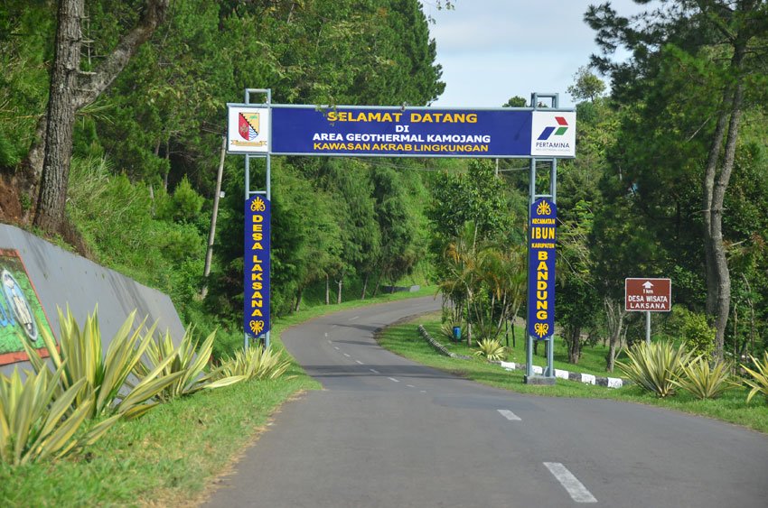

Sejarah
Sydney Harbour Bridge selama ini menjadi ikon Australia. Jembatan baja tersebut melintang dari kawasan bisnis Sydney CBD ke kawasan North Shore. Tak jauh dari jembatan ada Sydney Opera House yang juga tak kalah ikonis. Pemandangan yang mirip mungkin bisa dilihat di Kabupaten Garut, Jawa Barat. Meski tak ada gedung opera, namun jembatan di sana sekilas seperti Sydney Harbour Bridge. Jembatan Lingkar Cukang Monteng, itulah namanya. Jembatan berwarna kuning ini tepatnya berada di Desa Laksana, Kecamatan Ibun. Nama Cukang Monteng berasal dari bahasa Sunda yang berarti sungai yang curam. Beberapa kilometer sebelum sampai di jembatan, turis harus Melewati tanjakan curam yang kemiringannya hampir 25 derajat.
Membentang sepanjang sekitar 100 meter, jembatan ini memiliki tinggi 30 meter, dan lebar jalan 10 meter. Pembangunan jalan memakan biaya lebih dari Rp80 miliar. Hati-hati saat melintas di sini, karena banyak turis yang menepikan mobil dan motornya untuk berfoto dengan latar belakang sawah dan kebun Desa Laksana serta Gunung Guntur. Jembatan ini juga diharapkan bisa menggairahkan sektor pariwisata di kawasan sekitarnya, seperti Kawah Kamojang, Kawah Manuk, Kawah Kereta, Kawah Cibiliran, Kawah Hujan. Tidak lupa ada Danau Ciharus, Konservasi Elang Jawa, Konservasi Cagar Alam Kamojang, sampai Kebun Mawar di kawasan Hutan Situhapa. Pada 2018, Jembatan Cukang Monteng 'Kamojang Hill Bridge' dinobatkan sebagai jalan hijau Indonesia melalui penghargaan jalan hijau Indonesia oleh Badan Penelitian dan Pengembangan (Balitbang) Kementerian Pekerjaan Umum dan Perumahan Rakyat..
Geografis
Kamojang Hill Bridge Bandung, jembatan kuning mirip Sydney Harbor Bridge, terletak di jalur alternatif dari Bandung ke Garut. Biasanya banyak dipilih ketika musim mudik lebaran. Meski harus melewati jalur ekstrem. Namun lebih dari itu jembatan yang juga dikenal sebagai Cukang Monteng ini bisa jadi objek wisata Sightseeing (Pemandangan) dan Spot Instagramable. Kamojang Hill Bridge ini dapat anda capai melalui tiga jalur alternatif, yaitu melalui Keluar Tol Cileunyi - Rancaekek - Cicalengka - Garut - Samarang - Kamojang. Jalur kedua melalui Keluar Tol Moh. Toha/Tol Buah Batu - Baleendah - Ciparay - Majalaya - Paseh - Kamojang. Sedangkan jalur ketiga, setelah keluar tol Cileunyi - Rancaekek - Majalaya, Paseh - Ibun - Kamojang.
Lokasi

Meski jadi batas wilayah dengan Kabupaten Garut, secara administrasi Kamojang Hill Bridge atau Jembatan Cukang Monteng berada di Ibun, Kabupaten Bandung. Sebetulnya jembatan ini tergolong baru. Karena sebelum dibangun, akses dari Majalaya menuju Garut harus melewati tanjakan Monteng yang terkenal ekstrem dan mematikan. Tanjakan ini merupakan Jalan Raya Paseh-Kamojang.
Nah setelah jembatan jadi otomatis banyak yang lebih memilih melewati jalur baru dari Jalan Patrol ke Cisemut terus ke arah Kamojang Garut menyeberangi Kamojang Hill Bridge. Daripada harus lewat jalur lama yang terkenal mematikan.
Dari atas jembatan Cukang Monteng ini kita bisa melihat pemandangan yang sangat bagus. Mulai hamparan sawah, bagian Gunung Guntur Garut yang terkesan menyeramkan gegara disebut jadi hunian banyak harimau dan sering terdengar suara auman keras bisa dilihat dari sini. Begitupula Gunung Kamojang. Selain itu Kamojang Hill Bridge jadi akses menuju kawasan wisata Kamojang Garut. Sumber https://manglayang.id/kamojang-hill-bridge-bandung/
Tempat Wisata
Sejak adanya kamojang hill bridge, Wisata disekitar daerah kamojang mengalami peningkatan. kamojang menjadi tujuan untuk melepaskan penat dengan berlibur. Berikut beberapa destinasi wisata disekitar kamojang.
Gallery Foto
Berikut ini beberapa galeri foto tentang kamojang Hill Bridge